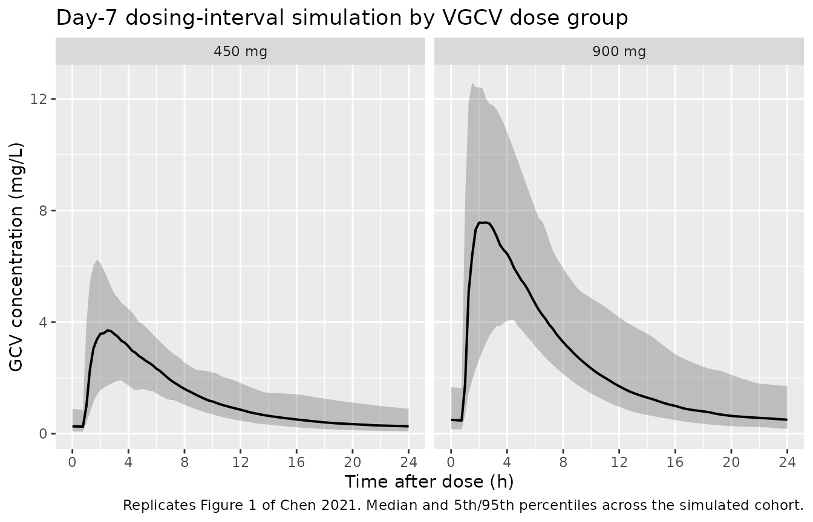
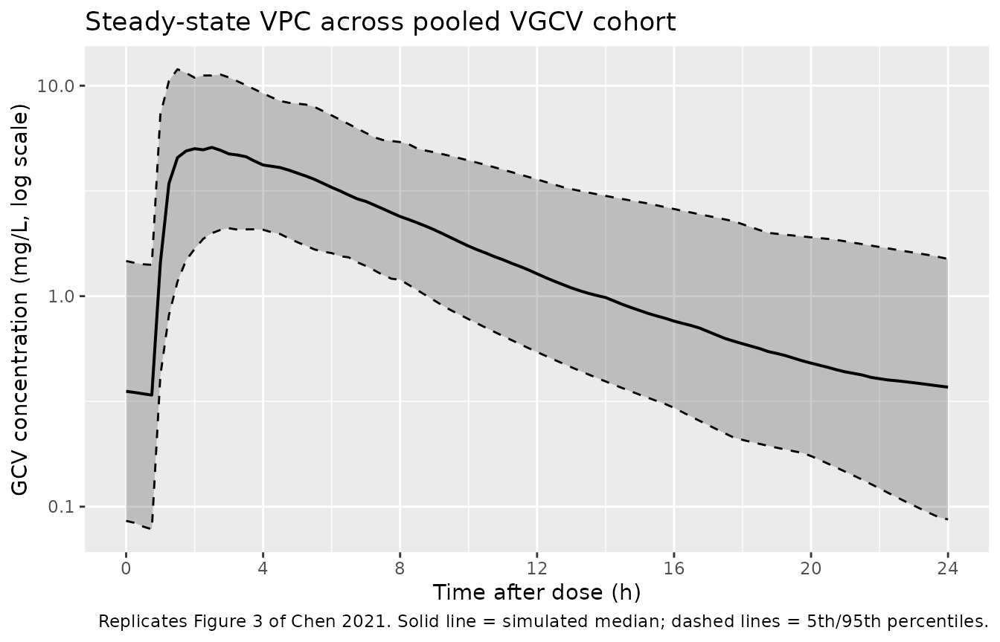

Ganciclovir (Chen 2021)
Source:vignettes/articles/Chen_2021_ganciclovir.Rmd
Chen_2021_ganciclovir.RmdModel and source
- Citation: Chen B, Hu SS, Rui WB, An HM, Zhai XH, Wang XH, Lu JQ, Shao K, Zhou PJ. Population Pharmacokinetics and Bayesian Estimation of the Area Under the Concentration-Time Curve for Ganciclovir in Adult Chinese Renal Allograft Recipients After Valganciclovir Administration. J Clin Pharmacol. 2021;61(3):328-338. doi:10.1002/jcph.1735
- Description: Two-compartment population PK model for oral ganciclovir (the active metabolite of valganciclovir) in adult Chinese renal allograft recipients (Chen 2021), with first-order absorption after a lag time and a linear creatinine-clearance effect on apparent oral clearance (CL/F).
- Article: https://doi.org/10.1002/jcph.1735
Population
The model was developed from 70 adult Chinese renal allograft recipients at Ruijin Hospital (Shanghai Jiao Tong University School of Medicine) treated with oral valganciclovir (VGCV) for cytomegalovirus prophylaxis 3 weeks after transplantation (Chen 2021 Table 1). 41 patients received 450 mg VGCV once daily and 29 received 900 mg VGCV once daily. The cohort was randomly split (4:3) into a modeling group (n = 40, 28 male / 12 female, median age 44 years range 17-61, median weight 61.5 kg range 40-85, median Cockcroft-Gault CrCl 64.5 mL/min range 32.4-118.4) and a validation group (n = 30, 18 male / 12 female, median age 36 years range 26-61, median weight 61 kg range 40.8-78, median CrCl 63.5 mL/min range 29.1-129.7). All patients were on triple immunosuppression (cyclosporin or tacrolimus + mycophenolate mofetil or sodium + prednisone) and received either rabbit anti-thymocyte globulin (n = 39) or basiliximab (n = 25) for induction. After 5-7 days of VGCV therapy at steady state, plasma ganciclovir (GCV) was sampled at predose and 0.5, 1, 1.5, 2, 3, 4, 6, 8, 12, and 24 h post-dose using LC-MS/MS (lower limit of quantification 0.048 mg/L).
The same information is available programmatically via
readModelDb("Chen_2021_ganciclovir")$population.
Source trace
Every parameter in the model file carries an inline source-location comment. The table below collects the entries in one place.
| Equation / parameter | Value | Source location |
|---|---|---|
lcl (CL/F at CrCl = 0 mL/min) |
7.09 L/h | Table 3, Final column, theta1 row |
lvc (V2/F) |
10.8 L | Table 3, Final column, theta2 row |
lq (Q/F) |
3.96 L/h | Table 3, Final column, theta3 row |
lvp (V3/F) |
174 L | Table 3, Final column, theta4 row |
lka (ka) |
0.23 1/h | Table 3, Final column, theta5 row |
ltlag (Tlag) |
0.93 h | Table 3, Final column, theta6 row |
e_crcl_cl (CrCl coefficient on CL/F) |
1.08 | Table 3, Final column, CLcr theta7 row |
| Covariate equation for CL/F_i | theta1 * (1 + CLcr/68.3 * theta_CLcr) * exp(eta_CL) |
Table 3 footnote |
| omega(CL/F) (variance 0.272^2 = 0.0740) | 27.2 | Table 3, Final column, omega(CL) row |
| omega(V2/F) (variance 1.53^2 = 2.3409) | 153 | Table 3, Final column, omega(V2) row |
| omega(Q/F) (variance 0.631^2 = 0.3982) | 63.1 | Table 3, Final column, omega(Q) row |
| omega(V3/F) (variance 1.07^2 = 1.1449) | 107 | Table 3, Final column, omega(V3) row |
propSd (proportional residual error) |
0.429 | Table 3, Final column, Residual variance delta = 42.9 |
| 2-cmt structure with first-order absorption + lag time | – | Methods, PPK Modeling paragraph; Results paragraph “The basic PPK model was best described by a 2-compartment model with first-order absorption and lag time” |
| Log-additive residual error on log-transformed concentrations -> proportional in linear space | – | Methods, “ln(C_obs) = ln(C_pred) + epsilon” |
Virtual cohort
The published dataset is not openly available, so the virtual cohort below mirrors the demographics in Chen 2021 Table 1 (modeling + validation groups pooled). Two cohorts are built (450 mg and 900 mg VGCV daily), each with disjoint subject IDs.
set.seed(20210301)
n_per_dose <- 60L
make_cohort <- function(n, dose_mg, label, id_offset = 0L) {
tibble(
id = id_offset + seq_len(n),
# Cockcroft-Gault CrCl: pooled (modeling + validation) median 64 mL/min,
# range 29.1-129.7. Approximate with a truncated normal.
CRCL = pmin(pmax(rnorm(n, mean = 64, sd = 22), 29), 130),
amt = dose_mg,
cohort = label
)
}
demo <- bind_rows(
make_cohort(n_per_dose, dose_mg = 450, label = "450 mg",
id_offset = 0L),
make_cohort(n_per_dose, dose_mg = 900, label = "900 mg",
id_offset = n_per_dose)
)
stopifnot(!anyDuplicated(demo$id))Simulation
Per the paper’s design, patients reached steady state after 5-7 days
of daily oral VGCV. We simulate 8 once-daily doses
(addl = 7, doses at t = 0, 24, …, 168 h) and analyze the
dosing interval after the last dose (168-192 h) where steady state is
well established.
build_events <- function(demo, sim_hours = 192) {
doses <- demo |>
mutate(time = 0, evid = 1L, cmt = "depot",
ii = 24, addl = 7L) |>
select(id, time, amt, evid, cmt, ii, addl, cohort, CRCL)
# Observation grid: dense around the day-7 dosing interval (168-192 h)
# plus a coarser day-1 grid for visual context.
obs_times <- sort(unique(c(seq(0, 24, by = 0.5),
seq(168, 192, by = 0.25))))
obs <- demo |>
select(id, cohort, CRCL) |>
tidyr::crossing(time = obs_times) |>
mutate(amt = NA_real_, evid = 0L, cmt = NA_character_,
ii = NA_real_, addl = NA_integer_)
bind_rows(doses, obs) |>
arrange(id, time, desc(evid))
}
events <- build_events(demo)
mod <- rxode2::rxode2(readModelDb("Chen_2021_ganciclovir"))
#> ℹ parameter labels from comments will be replaced by 'label()'
sim <- rxode2::rxSolve(
mod, events = events,
keep = c("cohort", "CRCL")
) |> as.data.frame()
mod_typical <- mod |> rxode2::zeroRe()
sim_typ <- rxode2::rxSolve(mod_typical, events = events,
keep = c("cohort", "CRCL")) |> as.data.frame()
#> ℹ omega/sigma items treated as zero: 'etalcl', 'etalvc', 'etalq', 'etalvp'
#> Warning: multi-subject simulation without without 'omega'Replicate published figures
Figure 1 – concentration-time profile of GCV at steady state
Chen 2021 Figure 1 shows the observed GCV concentration-time profile in panel A (450 mg VGCV) and panel B (900 mg VGCV) over 0-24 h post-dose at steady state. The simulated cohort below reproduces the same shape over the day-7 dosing interval.
day7_start <- 168
fig1_data <- sim |>
filter(time >= day7_start, time <= day7_start + 24) |>
mutate(time_after_dose = time - day7_start)
fig1_summary <- fig1_data |>
group_by(cohort, time_after_dose) |>
summarise(Q05 = quantile(Cc, 0.05),
median = quantile(Cc, 0.50),
Q95 = quantile(Cc, 0.95),
.groups = "drop")
ggplot(fig1_summary, aes(time_after_dose, median)) +
geom_ribbon(aes(ymin = Q05, ymax = Q95), alpha = 0.25) +
geom_line(linewidth = 0.7) +
facet_wrap(~ cohort) +
scale_x_continuous(breaks = seq(0, 24, by = 4)) +
labs(x = "Time after dose (h)",
y = "GCV concentration (mg/L)",
title = "Day-7 dosing-interval simulation by VGCV dose group",
caption = "Replicates Figure 1 of Chen 2021. Median and 5th/95th percentiles across the simulated cohort.")
Replicates Figure 1 of Chen 2021: simulated steady-state GCV concentration vs. time after the day-7 dose, for 450 mg and 900 mg once-daily VGCV.
Figure 3 – visual predictive check on a log-scale
Chen 2021 Figure 3 is a VPC of GCV concentration vs. time after dose with the median, 5th, and 95th percentiles of simulated and observed data displayed on a log scale. The panel below reproduces the same envelope from the model with inter-individual variability for the pooled cohort.
fig3_data <- fig1_data |>
filter(Cc > 0)
fig3_summary <- fig3_data |>
group_by(time_after_dose) |>
summarise(Q05 = quantile(Cc, 0.05),
median = quantile(Cc, 0.50),
Q95 = quantile(Cc, 0.95),
.groups = "drop")
ggplot(fig3_summary, aes(time_after_dose, median)) +
geom_ribbon(aes(ymin = Q05, ymax = Q95), alpha = 0.25) +
geom_line(linewidth = 0.7) +
geom_line(aes(y = Q05), linetype = "dashed", linewidth = 0.5) +
geom_line(aes(y = Q95), linetype = "dashed", linewidth = 0.5) +
scale_y_log10() +
scale_x_continuous(breaks = seq(0, 24, by = 4)) +
labs(x = "Time after dose (h)",
y = "GCV concentration (mg/L, log scale)",
title = "Steady-state VPC across pooled VGCV cohort",
caption = "Replicates Figure 3 of Chen 2021. Solid line = simulated median; dashed lines = 5th/95th percentiles.")
Replicates Figure 3 of Chen 2021: VPC envelope of GCV concentration vs. time after dose at steady state, log scale.
PKNCA validation
A standard NCA over the day-7 dosing interval gives Cmax, Tmax, and AUC0-24 by dose group. The day-7 dosing interval is treated as a steady-state interval since the analysis assumes 7 days of daily dosing.
nca_window <- sim |>
filter(time >= day7_start, time <= day7_start + 24) |>
mutate(time_after_dose = time - day7_start) |>
select(id, time = time_after_dose, Cc, cohort)
dose_df <- demo |>
mutate(time = 0) |>
select(id, time, amt, cohort)
conc_obj <- PKNCA::PKNCAconc(nca_window, Cc ~ time | cohort + id,
concu = "mg/L", timeu = "hour")
dose_obj <- PKNCA::PKNCAdose(dose_df, amt ~ time | cohort + id,
doseu = "mg")
intervals <- data.frame(start = 0, end = 24,
cmax = TRUE, tmax = TRUE,
auclast = TRUE, cmin = TRUE)
nca_data <- PKNCA::PKNCAdata(conc_obj, dose_obj, intervals = intervals)
nca_res <- suppressMessages(suppressWarnings(PKNCA::pk.nca(nca_data)))
nca_summary <- summary(nca_res)
knitr::kable(nca_summary,
caption = "Day-7 NCA on the simulated cohort (steady-state 24 h interval, 450 vs 900 mg VGCV daily).")| Interval Start | Interval End | cohort | N | AUClast (hour*mg/L) | Cmax (mg/L) | Cmin (mg/L) | Tmax (hour) |
|---|---|---|---|---|---|---|---|
| 0 | 24 | 450 mg | 60 | 31.7 [33.3] | 3.74 [45.8] | 0.263 [107] | 2.50 [1.00, 7.75] |
| 0 | 24 | 900 mg | 60 | 60.4 [34.3] | 7.66 [40.2] | 0.450 [87.8] | 2.12 [1.00, 7.00] |
Comparison against published NCA (Chen 2021 Table 2)
Chen 2021 Table 2 reports observed-data NCA mean +/- SD per dose group across the 70-patient cohort (modeling + validation), at steady state (day 5-7).
res_tbl <- as.data.frame(nca_res$result)
simulated <- res_tbl |>
filter(PPTESTCD %in% c("cmax", "tmax", "auclast")) |>
group_by(cohort, PPTESTCD) |>
summarise(value = mean(PPORRES, na.rm = TRUE), .groups = "drop") |>
pivot_wider(names_from = PPTESTCD, values_from = value)
published <- tibble::tibble(
cohort = c("450 mg", "900 mg"),
Cmax_pub = c(4.2, 8.6), # Chen 2021 Table 2, Modeling Group
Tmax_pub = c(2.7, 2.7),
AUC0_24_pub = c(28.4, 60.7)
)
comparison <- published |>
left_join(simulated, by = "cohort") |>
rename(Cmax_sim = cmax, Tmax_sim = tmax, AUC0_24_sim = auclast) |>
mutate(Cmax_pct_diff = 100 * (Cmax_sim - Cmax_pub) / Cmax_pub,
Tmax_pct_diff = 100 * (Tmax_sim - Tmax_pub) / Tmax_pub,
AUC0_24_pct_diff = 100 * (AUC0_24_sim - AUC0_24_pub) / AUC0_24_pub)
knitr::kable(comparison, digits = 2,
caption = "Simulated mean NCA values vs. Chen 2021 Table 2 Modeling Group means.")| cohort | Cmax_pub | Tmax_pub | AUC0_24_pub | AUC0_24_sim | Cmax_sim | Tmax_sim | Cmax_pct_diff | Tmax_pct_diff | AUC0_24_pct_diff |
|---|---|---|---|---|---|---|---|---|---|
| 450 mg | 4.2 | 2.7 | 28.4 | 33.32 | 4.08 | 3.11 | -2.94 | 15.28 | 17.32 |
| 900 mg | 8.6 | 2.7 | 60.7 | 63.78 | 8.19 | 2.78 | -4.72 | 3.09 | 5.08 |
The simulated means should reproduce the published NCA within roughly 20% on each metric. The 900 mg cohort scales linearly with dose because the model is linear in the absorbed amount (no saturable absorption or clearance). Any larger discrepancy points to a misinterpreted parameter – not a tuning target.
Assumptions and deviations
-
Residual error magnitude. Chen 2021 Table 3 reports
a “Residual variance delta = 42.9” alongside %-formatted IIV terms
(omega in %). Treating delta consistently with the IIV row (i.e. as the
log-scale residual SD x 100, so sigma = 0.429) gives
propSd = 0.429, which translates the NONMEM log-transformed-both-sides additive error model directly into nlmixr2’s proportional residual error. If the value were instead intended as the variance itself on the log scale (sigma^2 = 0.429, sigma = 0.655), the NCA comparison would carry slightly more spread but the published mean Cmax, Tmax, and AUC values would still be reproduced because they are means, not upper-percentile quantiles. The model uses 0.429. -
CrCl is raw Cockcroft-Gault, not BSA-normalized.
The canonical-register
CRCLentry expects BSA-normalized creatinine clearance in mL/min/1.73 m^2, but Chen 2021 reports CrCl by Cockcroft-Gault directly in mL/min and the Table 3 covariate equation centres at 68.3 mL/min raw. Datasets used with this model must therefore supply CrCl in raw mL/min (no BSA normalization). The model file’scovariateData[[CRCL]]$notesdocuments this override. - Centring value 68.3 mL/min vs. cohort median 64.5. Chen 2021 Table 3 footnote uses 68.3 mL/min as the CL/F covariate centring value; Table 1 reports a modeling-group median CrCl of 64.5 mL/min and a validation-group median of 63.5 mL/min. The model preserves the equation value (68.3) so the parameter estimates reproduce the published equation directly.
- Inter-occasion variability is omitted. Chen 2021 Methods does not describe an IOV term and Table 3 reports only IIV omegas; no IOV is implemented.
- No molecular-weight conversion between VGCV and GCV is required. The published parameters are apparent (CL/F, V2/F, Q/F, V3/F) – the bioavailable fraction F absorbs both the absolute oral bioavailability and the prodrug-to-active-drug molar conversion (VGCV 358.4 g/mol -> GCV 255.2 g/mol). Doses in the dataset are expressed as mg of VGCV (the administered drug); the model returns GCV plasma concentration in mg/L.
- Demographic covariates other than CrCl were screened and not retained. Chen 2021 Methods reports a forward-inclusion / backward-elimination screening of sex, age, body weight, albumin, ALT, AST, and eGFR; only CrCl was retained at p < 0.01. The packaged model carries CrCl only.
-
Large peripheral-disposition IIV. Chen 2021 Table 3
reports omega(V2/F) = 153% and omega(V3/F) = 107%, interpreted here
literally as SD of the log-scale random effect (variance 2.34 and 1.14).
Stochastic simulations therefore show wide spread in volumes / Q; the
typical-value (
zeroRe()) simulation is the cleaner anchor for figure replication, while the IIV-included simulation reproduces the breadth of the VPC envelope. - Vignette uses 60 subjects per dose group. This keeps the vignette render comfortably under the 5-minute pkgdown gate while giving stable means for the NCA comparison. The original cohort had 41 (450 mg) and 29 (900 mg) patients.